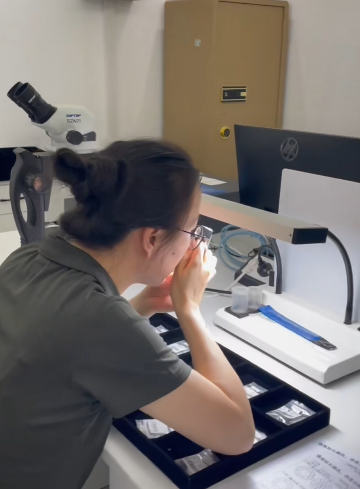

Pet Memorial Diamond Buying Guide: Technical Criteria and Quality Standards for Informed Selection
A technical evaluation framework for selecting pet memorial diamonds: carat specifications, color grading protocols, clarity standards, cut quality metrics, certification requirements, and supplier qualification criteria for pet cremation service providers and their clients.
The market for pet memorial diamonds has expanded significantly as pet cremation services seek differentiated offerings and pet owners look for meaningful alternatives to traditional memorials. Unlike conventional memorial products, memorial diamonds are manufactured through a complex materials engineering process — high-pressure high-temperature (HPHT) synthesis — that transforms biological carbon from pet hair or cremated remains into a crystalline diamond structure. For pet cremation service providers who offer memorial diamonds to their clients, and for pet owners evaluating these options, understanding the technical parameters that define quality and value is essential. This guide provides the objective criteria needed to evaluate memorial diamonds without reliance on marketing narratives or emotional positioning.
Key Takeaway: Pet memorial diamond quality is determined by the same four parameters that define all gem-quality diamonds: carat weight, color grade, clarity grade, and cut quality. Additionally, the carbon source handling protocol, synthesis documentation, and independent certification are critical differentiators between suppliers. A memorial diamond without third-party gemological certification and documented chain-of-custody from carbon sample to finished stone cannot be verified as authentic.
Carat Weight: Size, Cost, and Carbon Source Requirements
Carat weight is the most visible parameter of a memorial diamond and the primary driver of cost. One carat equals 200 milligrams. Memorial diamonds are technically available in sizes ranging from 0.3 to 2.0 carats, though the practical recommendation for pet memorial diamonds is 0.5 carat as the minimum for a meaningful gemstone with reliable quality characteristics. Diamonds below 0.5 carat present challenges in cutting and grading, and the fixed costs of synthesis and certification make smaller stones disproportionately expensive on a per-carat basis.
The relationship between carat weight and the required carbon source is direct and quantifiable. Hair contains approximately 45% carbon by mass. A 0.5-carat diamond requires approximately 0.1 grams of elemental carbon, which translates to roughly 0.22 grams of hair or fur. For practical process reliability and yield margin, manufacturers typically request 0.5 grams of source material for a 0.5-carat diamond, and 1.0 grams or more for a 1.0-carat stone. Pet cremation services should communicate these requirements clearly to clients and collect adequate sample material at the time of service.
Carat weight also affects the manufacturing timeline. A 0.5-carat diamond requires approximately 7-10 days of HPHT synthesis. A 1.0-carat diamond requires 14-18 days. Larger stones (1.5-2.0 carat) may require 21-30 days. The synthesis duration is a fixed cost regardless of whether the press runs one large cell or multiple small cells, so larger diamonds benefit from better amortization of setup costs. For detailed production timelines, see our day-by-day production analysis.
Color Grading: From Colorless to Fancy
Diamond color is graded on a standardized scale from D (completely colorless) to Z (noticeable light yellow or brown). For memorial diamonds, the natural color tendency depends on the carbon source and the synthesis atmosphere. Biological carbon from hair or fur contains nitrogen compounds that, if not fully removed during purification, can produce nitrogen-related color centers in the diamond lattice. The result is typically a near-colorless to faint yellow color in the G-J range unless specific process controls are applied.
Colorless grades (D-F) are achievable in memorial diamonds but require additional process control: extended purification of the carbon source, high-purity synthesis atmosphere (typically argon or vacuum), and optimized catalyst chemistry to minimize nitrogen incorporation. These process steps add cost and time. The premium for D-F color over G-H color in memorial diamonds is typically 15-25% per carat, reflecting the additional manufacturing complexity.
Fancy colors — blue, yellow, pink, and green — are also available in memorial diamonds. Blue is produced by boron doping during synthesis. Yellow is enhanced by controlled nitrogen incorporation. Pink is achieved through specific post-growth treatment or defect engineering. Fancy colors are not "natural" in the sense of geological origin, but they are authentic diamond colors created through controlled materials engineering. The color selection should be discussed with the manufacturer during the ordering process, as some colors require specific catalyst modifications and cannot be changed after synthesis begins. For a technical explanation of color formation, refer to our carbon transformation analysis.
Memorial diamond collection showing color variations from near-colorless to fancy shades, with standard brilliant cuts and proportional sizing.
Clarity Standards: Understanding Inclusions in Laboratory-Grown Diamonds
Clarity grades describe the presence of internal inclusions and external blemishes. The standard scale runs from FL (Flawless) to I3 (Included). HPHT-grown diamonds rarely achieve FL or IF (Internally Flawless) grades because the metal catalyst solvent used in the synthesis process commonly leaves microscopic metallic inclusions. These inclusions are a diagnostic feature of HPHT diamonds — they are visible under magnification as small, dark, reflective spots and are weakly magnetic. They do not affect the diamond's durability or longevity, but they do limit the maximum achievable clarity grade.
For memorial diamonds, clarity grades in the VS1-VS2 (Very Slightly Included) to SI1 (Slightly Included) range are typical and commercially acceptable. VS grades require 10x magnification to locate inclusions; SI1 inclusions are visible under magnification but typically not to the unaided eye. I-grade diamonds (I1, I2, I3) have inclusions visible without magnification and are generally avoided for memorial applications because the inclusions may affect transparency and light performance.
Pet cremation service providers should communicate clarity expectations to clients clearly. A VS1 memorial diamond is not "inferior" to a natural diamond of the same grade — it is a different category of material with different inclusion characteristics. The metallic inclusions in HPHT diamonds are evidence of the synthesis process, not defects in quality control. The critical question is whether the diamond has been graded by an independent laboratory that documents the inclusions accurately, not whether the diamond achieves a grade that is rare for its production method.
Understanding Diamond Manufacturing
Learn the technical fundamentals of HPHT diamond synthesis, catalyst systems, and growth kinetics that determine memorial diamond quality and consistency.
Cut Quality: Proportions, Symmetry, and Light Performance
Cut quality is the only parameter of the 4Cs that is determined by human engineering rather than natural or synthetic formation. A diamond can be colorless and flawless, but if it is poorly cut, it will not reflect light efficiently and will appear dull. The standard grading for cut runs from Excellent to Poor, based on proportions, symmetry, and polish.
For memorial diamonds, the round brilliant cut is the standard choice because it maximizes light return (brilliance) and dispersion (fire) across the broadest range of viewing angles. The ideal proportions for a round brilliant are well established: table width 52-58% of the girdle diameter, crown angle 34-35°, pavilion angle 40.5-41°, and total depth 59-62.5%. Memorial diamonds that meet these proportions receive "Excellent" cut grades and deliver optimal visual performance.
Alternative cuts — princess, cushion, emerald, oval, pear — are available but require more material removal during cutting, reducing the final carat weight from the raw crystal. A princess cut typically retains 80% of the rough weight, while a round brilliant retains approximately 50%. For memorial diamonds where the original crystal size is limited by the carbon source, the round brilliant is the most efficient choice for maximizing visual impact per carat. Fancy cuts should be selected only when the client has a specific aesthetic preference and the raw crystal is large enough to accommodate the material loss.
Certification: Independent Verification and Documentation
A memorial diamond without independent certification is a material of unknown quality. Certification by a recognized gemological laboratory provides objective documentation of the diamond's 4Cs, confirms its laboratory-grown origin, and supplies the dimensional and optical data required for insurance, appraisal, and resale. The standard certificate for memorial diamonds is the IGI (International Gemological Institute) Laboratory-Grown Diamond Report or equivalent from GIA, HRD, or another recognized body.
The certification report includes: carat weight (measured to 0.001 carat precision), color grade (on the D-Z scale), clarity grade (on the FL-I3 scale), cut grade (Excellent to Poor), proportions diagram, and a plotting diagram showing the location and type of inclusions. For laboratory-grown diamonds, the certificate explicitly states "Laboratory-Grown" to distinguish the material from natural diamonds. This is not a quality demerit — it is a classification statement required by industry standards.
Pet cremation service providers should verify that the memorial diamonds they resell are certified by a third-party laboratory, not by the manufacturer itself. Internal manufacturer reports are not independently verified and may not use the same grading standards as established laboratories. The certificate should be provided to the client with the finished diamond, and the certificate number should be registered with the laboratory's online verification system. This is the standard of practice in the diamond industry and should be the minimum requirement for memorial diamond sales. For more on quality verification, see our materials engineering guide.

Microscopic inspection during clarity grading: inclusion mapping and structural verification for memorial diamond certification.
Carbon Source Handling: Traceability and Chain of Custody
The defining characteristic of a memorial diamond is the origin of its carbon. For pet memorial diamonds, the carbon source is either hair or fur collected before cremation, or cremated remains (ashes) after the process. The handling of this material from collection to synthesis is a critical quality parameter that distinguishes professional memorial diamond manufacturers from generic synthetic diamond producers.
A qualified memorial diamond supplier must provide documented chain-of-custody for every sample. This includes: sample intake logging with unique identification codes, photographic documentation of the sample condition, physical segregation during all processing stages (purification, graphitization, synthesis), and batch records that link the finished diamond to the original sample. Cross-contamination between samples is the primary risk in memorial diamond manufacturing, and it is prevented through physical separation, dedicated processing equipment, and procedural controls.
Pet cremation service providers should ask prospective suppliers to describe their sample handling protocols in detail. Generic answers such as "we handle each sample carefully" are insufficient. The supplier should be able to explain: how samples are stored before processing, whether purification is performed in batch-dedicated equipment, how the synthesis cell is labeled and tracked, and what documentation is provided to the partner for customer verification. The BioGem Lab manufacturing infrastructure includes full batch traceability as a standard capability, with sample-specific documentation at every process stage.
Partner Note: BioGem Lab's white-label memorial diamond program includes sample-specific traceability documentation, partner-branded certificates of authenticity, and batch verification records. Every diamond is linked to its original carbon sample through a unique ID system that partners can reference for customer inquiries. Explore partnership documentation.
Supplier Evaluation: Six Criteria for Partnership Selection
Pet cremation services and memorial businesses selecting a memorial diamond supplier should evaluate candidates against six objective criteria. These criteria separate manufacturing-capable partners from marketing-only resellers and generic synthetic diamond traders.
1. Manufacturing Infrastructure: Does the supplier operate its own HPHT synthesis facility, or does it outsource production to third parties? In-house manufacturing provides direct process control, faster turnaround, and better quality consistency. Outsourced production introduces additional communication delays, quality variability, and limited customization options. The supplier should be able to describe its press capacity, catalyst protocols, and temperature control systems.
2. Carbon Handling Protocols: As described above, sample handling is the differentiating capability for memorial diamond manufacturing. The supplier should provide documented procedures for sample intake, purification, graphitization, synthesis tracking, and finished product verification. Ask for a sample of their batch documentation.
3. Certification Standards: Does the supplier provide independent third-party certification (IGI, GIA, or equivalent), or only internal manufacturer reports? Third-party certification is the industry standard for quality verification. Internal reports are not independently audited and may not be accepted by insurance companies or appraisers.
4. Production Transparency: Can the supplier provide technical specifications for its synthesis process: pressure, temperature, catalyst composition, growth rate, and quality control thresholds? A supplier who treats these as proprietary trade secrets may be concealing process limitations rather than protecting IP. The technical parameters of HPHT synthesis are well documented in the scientific literature; there is no legitimate reason for a manufacturer to withhold them entirely.
5. Partnership Terms: What are the wholesale pricing structure, minimum order quantities, white-label support, and marketing materials? A supplier that targets B2B partners should offer transparent pricing, no minimum order requirements for initial testing, and partner-branded documentation. Exclusivity requirements, high upfront fees, or complex commission structures are red flags.
6. Patent and IP Position: Does the supplier hold proprietary technology in carbon purification or memorial diamond manufacturing, or is it a generic HPHT operator with no differentiation? Patent-backed technology indicates investment in process development and provides a basis for quality claims. BioGem Lab's carbon extraction technology is protected under CNIPA Patent No. ZL 2010 1 0565778.9, with continuous refinement since 2012.
Pricing Structure: Cost Components and Value Assessment
Memorial diamond pricing is not arbitrary. The cost structure is determined by measurable manufacturing parameters: synthesis duration (press time per carat), catalyst and energy costs, cutting labor, certification fees, and the overhead of sample-specific handling and documentation. Understanding these components enables rational price comparison between suppliers.
The synthesis cost is the largest component and is roughly linear with carat weight for a given size range, but with a step increase at sizes above 1.0 carat because larger crystals require longer growth times and lower growth rates to maintain quality. Colorless grades (D-F) add 15-25% to synthesis cost due to extended purification and atmospheric control. Fancy colors add 20-40% depending on the dopant and process complexity. Independent certification adds a fixed cost per stone (typically $50-150 depending on the laboratory and report type), which is a larger percentage of total cost for smaller stones.
Pet cremation service providers should evaluate pricing on a total-cost basis, not just the per-carat rate. A supplier with lower per-carat pricing but no independent certification, no sample traceability, and no partner support may be less economical than a higher-priced supplier who includes these services. The value proposition to the end customer is the combination of diamond quality, documentation, and service reliability, not the lowest possible price.
Conclusion: Technical Literacy as a Competitive Advantage
The pet memorial diamond market will continue to grow as pet ownership increases and cremation services seek higher-margin offerings. The service providers who succeed in this market will be those who can communicate technical credibility to their clients. A pet owner who receives a memorial diamond wants to understand what they are buying: the origin of the carbon, the process that transformed it, the quality of the resulting stone, and the documentation that verifies these claims.
Technical literacy is therefore not merely an internal quality control matter — it is a customer-facing capability. The partner who can explain why 1.0 carat requires 1.0 gram of hair, why VS clarity is normal for HPHT diamonds, and why IGI certification matters is the partner who builds trust and generates referrals. The partner who relies on generic marketing language and avoids technical specifics will eventually lose credibility as customers research the product online.
BioGem Lab provides technical documentation, training materials, and process transparency to partners who want to build their memorial diamond business on a foundation of verifiable quality. The manufacturing science is not a secret to be guarded — it is the basis of the value proposition that differentiates professional memorial diamond suppliers from commodity traders. For partnership inquiries, technical documentation, or sample evaluation, contact the laboratory directly.
Patent Notice: BioGem Lab's carbon extraction and purification technology is protected under CNIPA Patent No. ZL 2010 1 0565778.9, with continuous refinement since 2012.
Frequently Asked Questions
How much hair or fur is needed for a pet memorial diamond?
Pet memorial diamonds require approximately 0.3 grams of hair or fur as the minimum carbon source. For optimal yield and process reliability, 0.5 grams or more is recommended. The actual carbon content in hair is approximately 45% by mass, so 0.5 grams of hair yields roughly 0.22 grams of elemental carbon. This is sufficient for diamonds up to 0.5 carat. For larger stones (1.0 carat and above), 1.0 gram or more of source material is advised to ensure adequate carbon supply and reduce batch variability.
What carat sizes are available for pet memorial diamonds?
Pet memorial diamonds are technically available in sizes from 0.3 to 2.0 carats, though 0.5 carat is the practical minimum for reliable quality and value. The most common selections are 0.5 carat, 1.0 carat, and 1.5 carat. Size selection depends on the available carbon source (more hair enables larger stones), budget considerations, and the intended jewelry setting. Larger diamonds require longer synthesis times — a 1.0-carat diamond typically requires 14-18 days of HPHT growth compared to 7-10 days for 0.5 carat.
What color options are available for pet memorial diamonds?
Pet memorial diamonds are available in colorless (D-F), near-colorless (G-H), and fancy colors including blue, yellow, and pink. The natural color tendency of memorial diamonds from biological carbon is typically in the near-colorless to light yellow range due to nitrogen content in the source material. Colorless grades require additional process control and atmospheric purity during synthesis. Fancy colors are achieved through controlled doping: boron produces blue, nitrogen produces yellow, and specific defect engineering creates pink. Color selection should be discussed with the manufacturer during the ordering process.
What certification should a pet memorial diamond have?
A pet memorial diamond should be accompanied by an independent gemological certification report from a recognized laboratory such as IGI (International Gemological Institute) or equivalent. The certificate documents the 4Cs: carat weight, color grade, clarity grade, and cut quality. It also confirms that the stone is laboratory-grown and provides dimensional measurements and a plotting diagram of inclusions. The certificate is the objective quality documentation that both the service provider and the end customer rely on for value verification and insurance purposes.
How long does it take to create a pet memorial diamond?
The complete production cycle for a pet memorial diamond is approximately 60-90 days from sample receipt to final delivery. This includes: carbon purification (3-5 days), graphitization (5-7 days), HPHT diamond synthesis (7-30 days depending on size), cooling and extraction (2-3 days), cutting and polishing (10-14 days), and independent gemological certification (7-14 days). The timeline varies with diamond size, color specification, and the certification laboratory's queue. B2B partners should communicate a conservative 60-75 day estimate to customers.
How can a pet cremation service evaluate a memorial diamond supplier?
Supplier evaluation should assess six criteria: (1) manufacturing infrastructure — own laboratory versus outsourced production, (2) carbon handling protocols — traceability, sample segregation, and chain-of-custody documentation, (3) certification standards — independent third-party grading versus internal reports, (4) production transparency — ability to provide process parameters and quality documentation, (5) partnership terms — wholesale pricing, minimum order quantities, and white-label support, and (6) patent and IP position — proprietary technology versus generic manufacturing. A supplier who can provide detailed technical documentation and batch traceability is preferable to one who treats the process as a black box.
Related Articles
EducationalMay 2026
Memorial Diamond Cost Breakdown: What Drives the Price
Detailed analysis of memorial diamond pricing components: synthesis duration, purification complexity, carat weight, color grade, and certification costs.
BioGem Lab supplies white-label memorial diamond manufacturing to pet cremation services, veterinary clinics, and memorial businesses. Zero inventory. Full brand control. ~60-day turnaround.